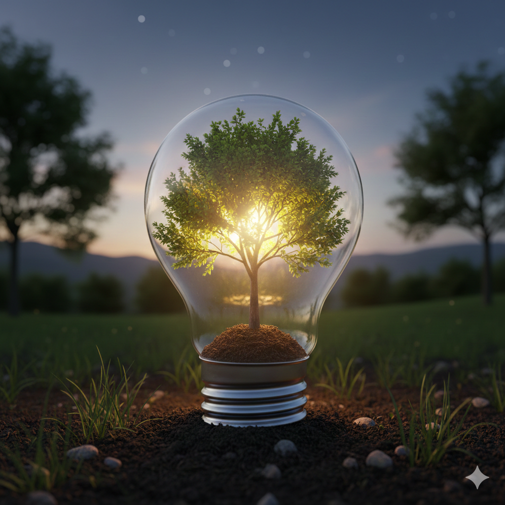

Tipps zum Energiesparen

Wir Menschen sind darauf ausgelegt, die Umwelt an uns anzupassen, und haben im Laufe der Zeit immer mehr technologische
Mittel und Wege gefunden, um so angenehm und komfortabel wie möglich zu leben. Doch dies geht zunehmend zulasten der Umwelt.
Lesen Sie nachfolgend nützliche Tipps, um Energie zu sparen und CO₂ direkt oder indirekt zu verringern.
Aufhängen statt Trocknen
Wäsche aufzuhängen ist manchmal eine nervige Aufgabe. Doch jeder Trockengang geht mit Stromverbrauch einher. Strom,
der in vielen Fällen noch mit umweltbelastenden Methoden erzeugt wird. Darüber hinaus zahlen Sie mehr und im Sommer
sorgt der Trockner zusätzlich für mehr Hitze in den Räumen.
Öffentliche Verkehrsmittel statt allein im Auto
Ob bei kurzen oder langen Strecken: Oft ist es einfach, ins eigene Auto zu steigen, um schnell ans Ziel zu kommen.
Lange Fahrten mit öffentlichen Verkehrsmitteln können herausfordernd sein, aber kurze und mittlere Strecken sind gut
mit Bus und Bahn erreichbar – ohne großen Zeitverlust. Denken Sie bei jedem Weg daran, wie wichtig es ist, genau
pünktlich zu sein und ob dieser Weg auch umweltfreundlicher möglich ist.
E-Mail statt Brief
Wie oft haben Sie folgenden Satz schon gelesen? „Denken Sie an die Umwelt, bevor Sie diese E-Mail ausdrucken.“
Und das zu Recht. Wir leben in einem Zeitalter, in dem wir über jede Distanz digital kommunizieren können. Auch der
Platzbedarf zur Datenspeicherung hat sich durch technische Geräte stark reduziert. Dokumente und E-Mails auszudrucken,
nur um nach der Bearbeitung im Müll oder in einer Akte zu landen, ist schlecht für die Umwelt. Digital lassen sich
solche Dokumente schneller und platzsparender versenden, speichern und organisieren.